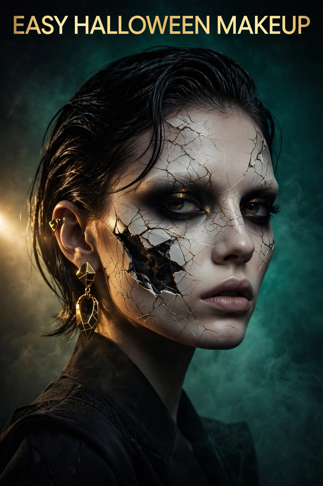

Halloween Makeup Tutorial 2026: Easy Looks & Essential Products
Published October 13, 2026 · Updated October 13, 2026 · By EventBuzz Team

Good Halloween makeup turns a plain black outfit into a full costume — and it costs a fraction of a bought costume. For Halloween 2026 (Saturday, October 31), this tutorial walks you through five easy looks step by step: classic vampire, cute cat, sugar skull, scary zombie, and creepy clown. Each takes 15 to 40 minutes with a basic face paint kit, and the beginner tips at the end will save you from the mistakes everyone makes once.
One rule before you start: always patch-test face paint on your inner arm 24 hours ahead. An allergic reaction on Halloween night is the scariest thing nobody plans for.
Your Essential Makeup Kit
You do not need a professional kit. This covers all five looks below:
- Face paint palette (12+ colours): water-activated palettes are beginner-friendly — they wash off easily and blend well. A set with brushes included is the best-value starter.
- Face paint crayons: brilliant for sharp lines (whiskers, skull teeth, stitches) and for kids, since they are washable and easy to control.
- Sponges and stencil kit: a sponge gives smooth, even base coverage in seconds; stencils add spider webs, stars, and scales without freehand skill.
- Black eyeliner and red lipstick: you probably own these — they handle details, outlines, and vampire lips.
- Setting spray or translucent powder: keeps everything on through dancing, hugging, and October humidity.
- Makeup remover and wipes: oil-based paint needs an oil-based remover; water-based paint comes off with soap and water.
Look 1: Classic Vampire (20 minutes)
- Apply pale foundation or white face paint all over with a sponge — vampires are dramatically pale.
- Contour cheekbones and temples with grey or brown for a hollowed, undead look.
- Smudge dark red or black eyeshadow around the eyes, extending slightly outward.
- Paint lips deep red, then draw two thin "blood trails" dripping from the corners of the mouth.
- Optional: stick-on fangs or drawn fangs with white paint over the lips. Add a black cape and you are done.
Look 2: Cute Cat (15 minutes)
- Apply your normal foundation as the base — this look is about details, not full-face paint.
- Draw a black triangle nose and extend a line down to the lips, filling the lips black.
- Add whisker dots and three whisker lines on each cheek with eyeliner or face paint crayon.
- Create cat-eye flicks with liquid eyeliner, a little bolder than usual.
- Finish with a headband with ears. Cute, quick, and works with any black outfit.
Look 3: Sugar Skull (35 minutes)
- Cover the whole face in white paint with a sponge — two thin layers beat one thick one.
- Paint large black circles around the eyes, extending toward the temples, then add petal shapes around them in bright colours.
- Draw a black inverted heart on the nose tip.
- Extend the mouth into a skull grin: black line from each lip corner toward the ears, with vertical "teeth" lines across the lips.
- Add flowers, dots, and spider-web details on the forehead and chin in pink, blue, and orange. Seal with setting spray.
Look 4: Scary Zombie (30 minutes)
- Apply grey-green tinted base with a sponge, leaving it patchy — zombies are not evenly coloured.
- Darken eye sockets heavily with black and purple; smudge downward for the sunken effect.
- Draw "wounds" with red paint: jagged ovals with dark centres, plus thin fake-blood drips.
- Streak dark paint through the hair at the temples so the undead look continues past the face.
- Rip and stain an old shirt — costume and makeup should tell the same story.
Look 5: Creepy Clown (25 minutes)
- White base all over, including lips — use a sponge for speed.
- Paint exaggerated red smile extending past the mouth corners, with pointed ends.
- Draw black or red triangles above and below the eyes; add a red round nose.
- Smudge the edges slightly — perfect symmetry is cute, smudged is scary. Choose your vibe.
- A colourful wig or painted hair plus any bright clothing completes it.
Beginner Tips That Prevent Disasters
- Thin layers, always: two thin layers of paint look smooth and last; one thick layer cracks within an hour.
- Work light to dark: apply light colours first, then dark details on top. Fixing a dark mistake over light paint is miserable.
- Photograph in flash: take a test photo with flash before leaving. Some paints look great in the mirror and ghostly (wrongly) in photos.
- Seal everything: setting spray or a light dusting of translucent powder is the difference between makeup that lasts all night and makeup that lasts one hug.
- Eyes are sacred: never use craft paint, acrylics, or anything not labelled face-safe near eyes. If it is not cosmetic-grade, it does not go on skin.
Removing It All (The Forgotten Step)
Water-based face paint comes off with warm water and gentle soap — wash twice. Oil-based or grease paint needs an oil cleanser or coconut oil first, then soap. Never scrub with rough cloths; soak a warm flannel and press. Moisturise after — a full face of paint is drying, and your skin will thank you on November 1st.
Frequently Asked Questions
What is the easiest Halloween makeup look for beginners?
The cat look — normal foundation plus eyeliner whiskers, nose, and cat-eye flicks. It takes about 15 minutes, needs no special paint, and suits any black outfit.
Which face paint is safest for skin?
Water-based, cosmetic-grade face paint labelled non-toxic and hypoallergenic. Avoid craft paints, acrylics, and anything not explicitly made for skin — especially around the eyes.
How do I make Halloween makeup last all night?
Apply in thin layers, let each layer dry, and seal with setting spray or translucent powder. Avoid touching your face, and carry blotting papers rather than reapplying.
How do I remove stubborn Halloween makeup?
Water-based paint: warm water and soap, twice. Oil-based or grease paint: massage with coconut oil or an oil cleanser first, then wash. Soak rather than scrub, and moisturise afterwards.
Can I do Halloween makeup with regular cosmetics?
Yes — eyeliner, eyeshadow, and lipstick handle most detail work (cat whiskers, vampire eyes, clown outlines). Face paint is only essential for full-face coverage like white skull bases or zombie tints.
Conclusion
Five looks, one basic kit, and an evening of practice — that is all Halloween makeup takes. Start with the cat or vampire, work up to the sugar skull, and always seal and patch-test. Your costume is the outfit; your makeup is the character.
Plan the whole celebration with these guides:
Happy haunting — and Happy Halloween 2026!
Makeup Kit Essentials
Face paint palettes, crayons and stencil kits — everything used in the tutorials above.


Prices shown at the time of publishing and can change. Links take you to Temu, where shipping and delivery details are shown.